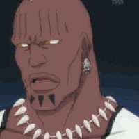

136 · 14 · 10 시간 전 · 원문
애엄마가 아는사람 만나서 잠깐 얘기하는 사이 도로로 뛰쳐나갓다고함
수집 당시 댓글 14개
수박은맛있어 · 9 시간 전
예전에 약국에서 나가는데 데스크 앞에있던 애기가 바로 내뒤에 있더라고
문 닫을려고햇는데 큰일날뻔했었음
뇨뇨키키 · 1 시간 전

밤귀신 · 9 시간 전
진짜 하네스 해야함.
MD7475264 · 9 시간 전
저러다 사고났으면 한 가정이 박살날 뻔 했다
대단한 선행이네
초고수 · 8 시간 전
인류애 충전
카발란 · 8 시간 전
친절한이웃
JOHANSHINITS · 7 시간 전
미녀와야스 · 7 시간 전
행동력 지린다
뚱녀들죽입시다 · 7 시간 전
멋있다
실제로 · 7 시간 전
저러고 애엄마 귀싸개기 플파워로 갈겼다고 함
구스312 · 1 시간 전
ㄹㅇ?
으헝헝 · 25 분 전
라는 소설 추천좀
묘성이 · 2 시간 전
아우 대단하다 엄두도 안나 나는
크크하하허허 · 36 분 전
벨트 푸는걸 몇번이나 리플레이 해주냐 ㅋㅋㅋ


예전에 약국에서 나가는데 데스크 앞에있던 애기가 바로 내뒤에 있더라고
문 닫을려고햇는데 큰일날뻔했었음